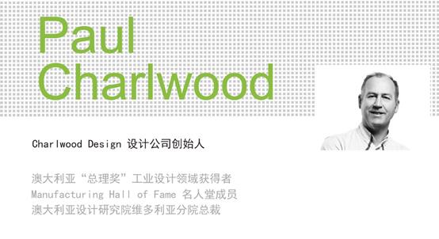

Innovation led by design helps enterprise develop, --“The second Sino-Australia international design dialogue forum" was held with success in Xinchang, Zhejiang province.
Abstract
“The second Sino-Australia international design dialogue forum” was held by the People's Government of Zhejiang Xinchang and Southeast university on May 27-28. A number of famous designers gave a report to enterprises located in Xinchang hi-tech park. This activity got a complete success with the support of local government and enterprise.
“The second Sino-Australia international design dialogue forum” was held by the people's government of Zhejiang Xinchang and Southeast university in Xinchang on May 28. The topic of this forum is "Innovation led by design helps enterprise develop". This activity received support from China industrial design association. More than 200 people including experts and scholars in industrial design in both China and Australia and leaders of government and enterprises attended the forum.
This activity lasted two days. On 27th afternoon, Professor Chengqi Xue visited well-known enterprises such as Zhejiang Titan co., LTD with leaders in Xinchang.
These well-known designers went into the production workshop, understand the production process and operating conditions of enterprises in the period of visiting. Each enterprise introduced the production conditions, technical problems in the development of and expectations of industrial design, requirements and suggestions. Both sides discussed the important role that industrial design played in the process of enterprise development and the way of "industry-university-institute" cooperation in the future.
On may 28th ,the BBS opening ceremony was held in Titan international hotel at 8 o 'clock in the morning. The vice President of China industrial Design association - Professor Guanzhong Liu , director of the Southeast university industrial Design - Professor Chengqi Xue, a professor at Zhejiang university professor, deputy director of industrial Design -Shijian Luo, Monash university in Australia - Ian Wong, Australian Charlwood Design company founder - Paul Charlwood, Australia's famous product designers - James Hannon Tan and leaders from Xinchang government departments and business leaders and friends of the media took part in the BBS.
The secretary of Xinchang county Party committee, Mr.Jianming Lou, delivered his opening speech for this forum.The Honorary vice president of China Industrial Design Association, Professor Guanzhong Liu, delivered a speech.
After the opening ceremony, the Experts and scholars at the conference made their keynote speeches respectively.The Peking university professor Guanzhong Liu made the keynote speeches “Changing the thinking way from making to planning”.
The technique and tools are chosen. The survival purpose of human is solving the problems by doing things.Making is not the purpose. The material desire only lead the Possessive and corrode the human’s consumption concept. The technique focus on pursuing the elegance. Designing solve the real problems with no need to be elegant. Commerce is unsustainable and destroys ecology for the purpose of profit. Only the design becomes the human’s wisdom without being destroyed by balancing the technique and Commerce.
The professor Chengqi Xue of Southeast University made the keynote speeches “The Midas touch’s industrial design”.
Seeking the function and status of industrial design in the human life,product competition, enterprise development and national brand construction.Asking the humanized attributes in the human design activities. Discussing the industrial design’s function in the transformation and upgrading of enterprises and enterprise development.
The professor Luo Shijian of Zhengjiang University made the keynote speeches “Integrating the innovation to promote industrial upgrading”. The core problem of enterprises and government should be considered now is how to combine the creation and technology and how to promote the industry by design. Today's product innovation has not only confined to the technology or a pure appearance Design. It’s necessary to integrate User, design, business and culture to carry out the innovations of new features, new technology, new design, new materials and new areas. Therefore, product innovation = （Ideology＋Technology）×Design = traditional product promotion.
The invited Australian designers also have certain international force, who represent the highest level Australian industrial design.
The well known Australian product designer James Hannon Tan did the report: “global perspective – regard Melbourne as the springboard of global industrial design practice "
Design has become an interdisciplinary nature of open innovation behavior. It contains rich design cognitive information when the project team in the process of design and art combined. In order to improve the cognitive level of complex innovation design, the study is committed to combining the theory of information and semantic computing technology, to explore the cognitive, language, communication and sharing of team design concept evolution basic rule, such as innovative design of the construction of unstructured data representation of cognitive space.
The winner of "Prime minister of Australia " Award-- Paul Charlwood did the report “the introduction Charlwood Design company”:

He introduced the set up process of "Charlwood Design". Besides, he explained the development strategy of the industrial Design company under the background of globalization of the market from the perspective of the founder. In the perspective of Melbourne industrial Design present situation, he elaborated the important role of industrial Design company in the process of enterprise development, and the cooperation between industrial Design companies and enterprises.
Software and digital platform, like the Wacom digital plate and SketchBook Pro software digital design tools are widely used in Australian industrial design practice. Higher education courses walk into digital development that student's work can be done on the computer. But the teaching practice has not taken full use of digital environment. Wikipedia, blogs, QQ and weibo, provides more interesting tool in the industrial design teaching. Web 2.0 has a certain advantage when used in the industrial design practice.
“The second China& Australia international design dialogue BBS" was held successfully. Chinese and Australian well-known designers interacted with enterprises closely through this BBS activities and communication. Southeast university industrial design focus on raising the level of industrial design in Xinchang, and enhancing the overall competitive strength of Xinchang with the help of advanced design idea and experience. The rich development experience of Australian industrial design can inject new vitality to the development of enterprise through the platform which southeast university industrial design production base on. This BBS makes more enterprises realize the important role of industrial design. We believe that, enterprises’ independent innovation ability and the transformation and upgrading of enterprises will get steady development with the efforts of government, universities and design companies.